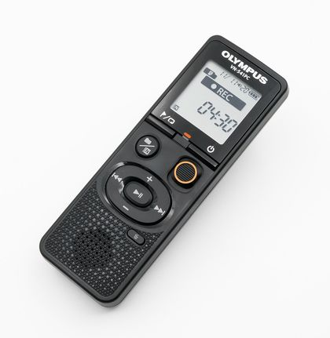
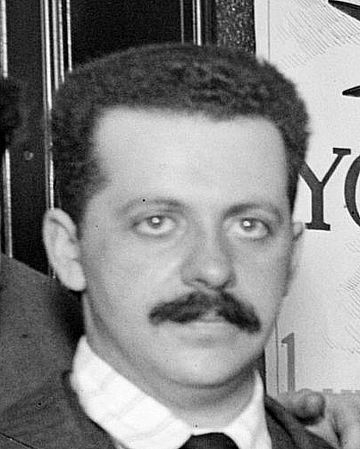
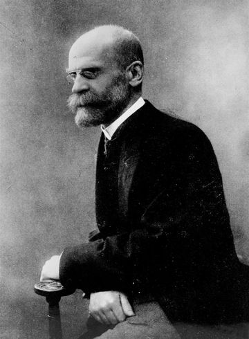
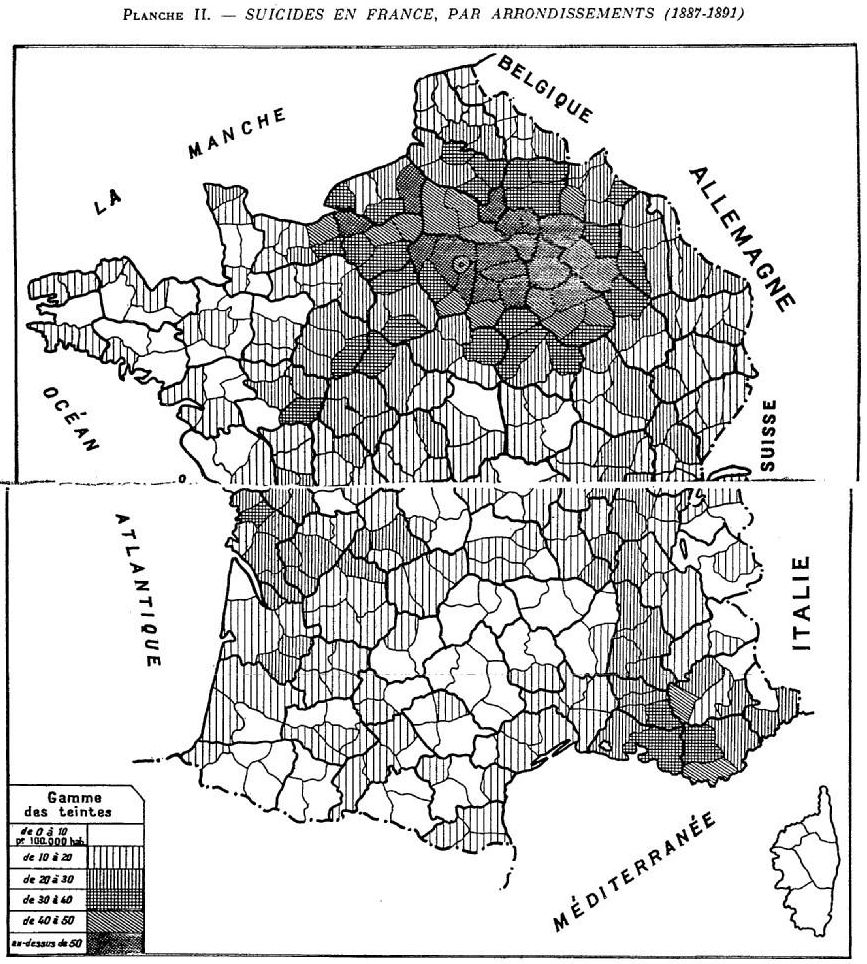
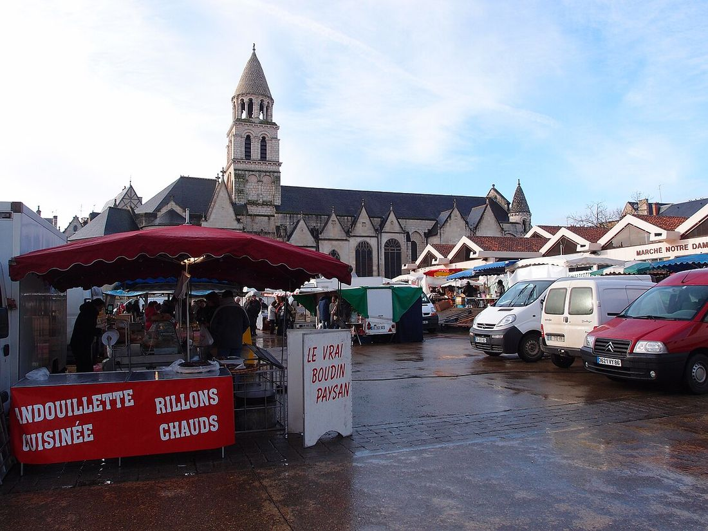
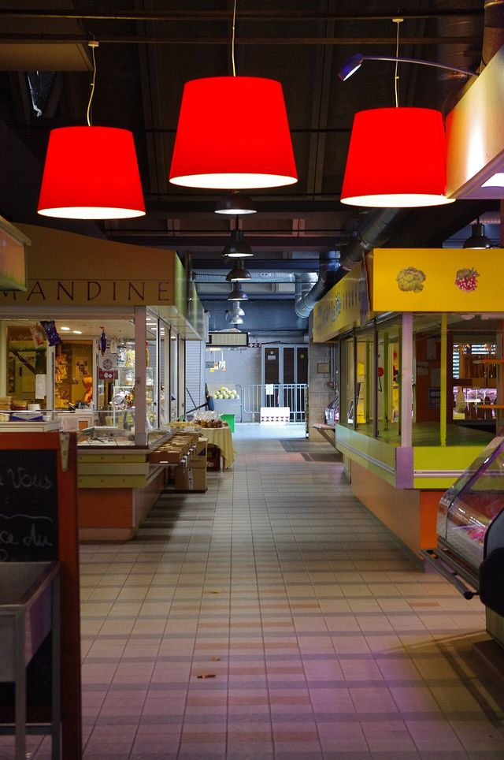
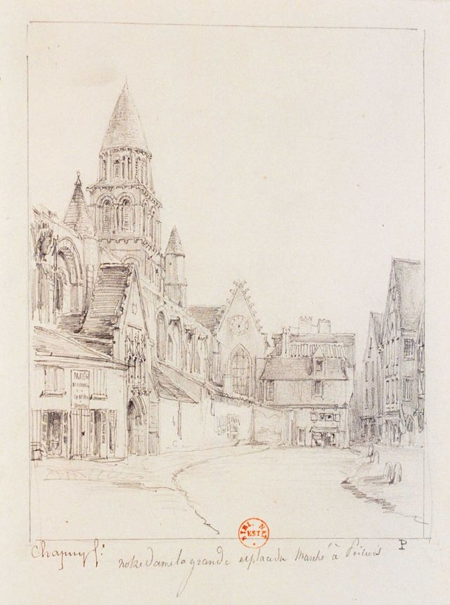

Techniques d’enquête & Digital Methods
ICalendrier du semestre
| Date | Séance | Contenu |
|---|---|---|
| 21/09 | Cours 1 Coville | Introduction ; groupes, échantillonnage, problématisation |
| av. 23/09 | Devoir | Point sur le sujet ; stratégie d’échantillonnage ; 1re liste de questions |
| 24/09 | Cours 2 Coville | L’entretien : grille, recherche et recrutement des enquêté·es |
| av. 28/09 | Devoir | 1re version de la grille ; début du recrutement (RDV dès le 1er octobre) |
| 28/09 | Relecture Coville | Correction des grilles d’entretien |
| 30/09 | Cours 3 Coville | Techniques de relance ; observation ethnographique |
| 01/10 | Cours 4 Vétel | Introduction au questionnaire et aux méthodes quantitatives |
| 13/10 | Cours 5 Coville | Analyse thématique des entretiens |
| av. 14/10 | Devoir | Entretiens commencés et transcrits ; compte rendu à M. Coville ; thèmes et 1re version du questionnaire |
| 14/10 | Cours 6 Vétel | Mise en forme et paramétrage du questionnaire |
| 15/10 | Relecture Vétel | Dernière relecture du questionnaire |
| 16 → 22/10 | Devoir | Finaliser le questionnaire + stratégie de diffusion |
| 22/10 | Échéance | Questionnaire en ligne et diffusé ; entretiens et analyse en parallèle |
| 17/11 | Cours 7 Vétel | Analyse et présentation des données quanti (objectif : plus de 100 réponses) |
| 30/11 | Relecture Coville | Suivi de l’avancement des dossiers |
| 18/12 | RENDU | Dossier complet en PDF |
IISéance 1 · Introduction aux méthodes en sciences sociales
21/09/2026 · Marion Coville
A. Quali et quanti
| Quantitatif | Qualitatif | |
|---|---|---|
| Matériau | Grand volume de textes et de questionnaires : corpus, presse, bases de données | Observation ethnographique (présentiel ou en ligne), entretiens |
| Intérêt | Estimer de manière chiffrée les relations entre variables | Décrire une situation, rendre compte d’une expérience, étudier des représentations et des jugements |
| Restitution | Chiffres, statistiques, graphiques | Extraits du carnet de terrain, verbatims |
Aucune méthode n’est plus neutre que l’autre : il faut les deux. Hors de la recherche, on croise souvent des interlocuteurs qui ne jurent que par les chiffres et les métriques.
B. La démarche d’enquête
- Démarche sociologique : approche analytique qui produit des connaissances sur le monde social et identifie des réalités difficiles à appréhender.
- Problématisation : la mise en question du sujet. Elle oriente l’enquête et détermine les données nécessaires.
- Échantillonnage : choisir auprès de qui recueillir les données, selon ce qu’on veut comparer.
Champs d’application : recherche et organismes publics (DiPLab, France Stratégie, CNIL), culture et associations (Lecture Jeunesse, musées), entreprises (enquêtes de satisfaction), communautés numériques.
C. Éthique et données
Anonymiser les transcriptions : supprimer nom et prénom, remplacer le prénom par un pseudonyme ou un code, modifier les données identifiantes, surtout dans les « petits mondes ».
Fichiers audio : aucun partage, suppression dès la fin de l’enquête. Pas de données confiées aux GAFAM : un outil Google est rattaché à un compte souvent mal verrouillé.
| Étape | Bonne pratique | Outils |
|---|---|---|
| Recueil | Enregistrement numérique ; questionnaire protégé par une phrase de passe | Framaforms |
| Traitement & analyse | Transcription automatique ; tris à plat et tris croisés | Whisper, Buzz Captions, noScribe |
| Stockage & partage | Pas de stockage en ligne des entretiens ; transcriptions anonymisées par clé USB | Clé USB |
- Quali et quanti se complètent.
- La problématique oriente toute l’enquête.
- On choisit ses enquêtés selon ce qu’on veut comparer.
- Anonymiser, ne pas partager les audios, éviter les GAFAM.
Exercice · cas de l’association environnementale
Le service com d’une association de défense de l’environnement doit recruter des bénévoles. Méthodes envisagées : analyse SWOT, questionnaire, entretiens, focus group.
IIISéance 2 · L’entretien
24/09/2026 · Marion Coville · grille d’entretien et recrutement
Concrètement : une conversation préparée et orientée, avec une personne sélectionnée, de 45 minutes à 2 heures, en face à face, enregistrée et transcrite.
A. D’où vient l’entretien
Il naît d’une recherche de relation plus égalitaire entre chercheur et enquêté. La question centrale : comment ne pas recréer la situation d’un interrogatoire ?
B. Ce que l’entretien n’est pas
| Ce n’est pas… | Pourquoi |
|---|---|
| Un questionnaire | On ne déroule pas une liste de questions fermées, on fait produire un discours. |
| Une interview journalistique | On ne cherche pas la petite phrase ni la réaction à chaud. |
| Une discussion informelle | C’est une situation construite, préparée, avec un objectif de recherche. |
| Une occasion de se mettre en valeur | On ne prouve pas sa connaissance du sujet : c’est l’enquêté qui parle. |
C. Une posture compréhensive
- L’entretien n’est pas là pour confirmer vos théories.
- Votre rôle : créer un cadre propice à l’écoute et à la production du discours.
- Les hypothèses se construisent de manière inductive, à partir des données collectées.
D. Un dispositif technique

L’entretien est une situation sociale et en même temps un environnement matériel : un enregistreur, une prise de notes.
E. La grille d’entretien
Elle traduit les questions de recherche en questions à poser, regroupées par thèmes, avec leurs relances.
Les 5 étapes de conception
- Lister les questions qu’on se pose.
- Identifier des regroupements thématiques.
- Affiner les questions de recherche.
- Traduire les questions de recherche en questions à poser.
- Identifier les relances potentielles.
La question introductive
C’est elle qui ouvre l’entretien : la plus ouverte possible, elle cadre la discussion. Partir d’une question qui appelle une réponse longue et descriptive, puis relancer pour obtenir précisions et opinions (« Comment l’avez-vous choisi ? Quels sont les principaux avantages ? Et les inconvénients ? »).
Guider et favoriser la parole
On ne coupe pas, on suit le fil de la parole, sans rester inactif : hochements de tête, sourires, rires partagés, marquer la surprise, faire preuve d’empathie.
IVSéance 4 · Le chiffre, du réalisme aux indicateurs
01/10/2026 · Bruno Vétel · introduction au quantitatif
Le chiffre comme archétype du réalisme scientifique
« 15,2 % de chômage » paraît plus vrai que « beaucoup de gens sont au chômage ». Le chiffre semble décrire le réel sans point de vue : c’est le réalisme. Le chiffre n’est pas faux, mais il n’est pas neutre.
D’où vient ce prestige
- Un lien avec l’État : Statistik, la « science de l’État » (XVIIIᵉ s.). Compter servait d’abord à gouverner.
- Un lien avec la science : ce qui est mesurable est connaissable.
- Une « technologie de la distance » (Theodore Porter, Trust in Numbers, 1995) : on fait confiance aux chiffres parce qu’ils semblent effacer le jugement humain.
Les chiffres agissent sur le monde
- Ils fixent les débats : on discute autour d’un indicateur (PIB, classement de Shanghai), rarement de lui.
- Loi de Goodhart : quand une mesure devient une cible, elle cesse d’être une bonne mesure (l’école jugée sur son taux de réussite au bac qui écarte les élèves faibles).
La mise en forme compte aussi : dans l’infographie tunisienne du cours, les pictogrammes rendent le chiffre émotionnel, le titre « légère hausse » interprète à la place du lecteur, et l’échelle et les comparaisons (Monastir contre Tataouine) orientent la conclusion. À lire : Olivier Martin, L’empire des chiffres (2020).
| Qualitatif (entretiens) | Quantitatif (questionnaire) | |
|---|---|---|
| Question | Comment ? Pourquoi ? | Combien ? À quelle fréquence ? |
| Force | Profondeur, sens, nuances | Généralisation, comparaison |
| Limite | Pas représentatif | Catégories figées d’avance |
D’où l’ordre du programme : les entretiens avant le questionnaire. Le qualitatif sert à construire de bonnes catégories (de bonnes conventions) pour le quantitatif.
Chiffres descriptifs : les dénombrements
Un chiffre descriptif dit combien. Le nombre de chômeurs au 4e trimestre 2025 change selon la source :
| Indicateur | T4 2025 | Qui est compté ? |
|---|---|---|
| France Travail, cat. A | 3,348 M | Inscrits sans aucune activité, tenus de chercher un emploi |
| France Travail, cat. A-B-C | 5,753 M | Inscrits tenus de chercher un emploi, avec ou sans activité réduite |
| Chômeurs au sens du BIT (Insee) | 2,509 M | Sans emploi, disponibles et en recherche active, mesurés par l’enquête Emploi |
- France Travail compte des inscriptions : les chômeurs non inscrits ne sont pas comptés, les inscrits avec une petite activité passent en B ou C.
- Le BIT fixe une définition commune pour comparer les pays : n’avoir travaillé aucune heure dans la semaine, être disponible sous deux semaines, chercher activement.
- Les catégories changent (ANPE, Pôle emploi, France Travail), ce qui complique les comparaisons dans le temps.
Il n’existe pas de « vrai » nombre de chômeurs, seulement des indicateurs. Choisir celui qu’on met en avant est déjà un choix de communication.
Comment un indicateur est construit
- Construction : selon des objectifs donnés, qui fixent la définition et les catégories.
- Explication : le chiffre circule avec des discours (justificatifs et pédagogiques, d’experts présentés comme « objectifs », journalistiques).
- Compétences : à préciser avec la suite du cours.
Les sondages, de la propagande au marketing

- Relations publiques (États-Unis, début XXᵉ) : Ivy Lee, Edward Bernays (Propaganda, 1928).
- Psychologie des foules (Europe, 1900-1933) : Gustave Le Bon (1895), Gabriel Tarde (L’Opinion et la foule, 1901).
- Propagande du IIIᵉ Reich (1933-1945) : ministère de Goebbels.
- Instituts de sondage : Gallup (1935), Ifop en France (1938), généralisation après 1945.
- Marketing publicitaire (années 1950-60) : « Torches of Freedom », Bernays pour Lucky Strike (1929), la cigarette vendue aux femmes comme symbole d’émancipation. Pour l’ambiance : Mad Men.
Le sondage naît d’une volonté de connaître l’opinion pour agir dessus : ce n’est pas un outil neutre. Persuader sans transparence relève de la manipulation : à ne pas faire, mais à connaître pour s’en protéger.
Conséquences politiques : pour montrer que le chômage baisse, un gouvernement peut créer des emplois… ou changer d’indicateur. Le nombre de tests positifs à un virus dépend de la volonté des gens d’aller se faire tester ; les eaux usées en dépendent moins.
Chiffres explicatifs : Durkheim, Le suicide (1897)

Un chiffre explicatif met deux variables en relation pour dire chez qui ou pourquoi (taux de chômage selon le diplôme). Dans un questionnaire, cela passe par les tris croisés.
- Le suicide comme fait social : les taux varient de façon régulière d’un groupe à l’autre (États allemands du XIXᵉ, selon situation familiale et sexe).
- Variations concomitantes : le taux baisse quand l’intégration sociale augmente, pour les hommes en couple même sans enfant, pour les femmes en couple seulement avec enfants.
- Condition : avoir collecté des données de contexte (âge, sexe, situation familiale, CSP).

Face à un chiffre, y compris les vôtres
- Qui l’a produit, et dans quel but ?
- Quelle définition se cache derrière les catégories ?
- Sur qui porte-t-il (échantillon, taille, période) ?
- Comment est-il présenté, et qu’est-ce que la présentation suggère ?
IV bisAnalyse et restitution des entretiens
Marion Coville · cours 4 de sa partie, après la Toussaint · d’après les diapos
A. L’analyse thématique en 4 étapes
C’est l’exercice commencé avant les vacances de la Toussaint.
| Étape | Ce qu’on fait | Résultat |
|---|---|---|
| 1 | Analyse inductive sur un échantillon de 3 à 5 entretiens : relire toute la transcription, identifier et taguer toutes les idées et tous les sujets développés par l’enquêté·e. | Une longue liste de sujets |
| 2 | Grille d’analyse : regrouper ces sujets en ensembles thématiques cohérents, supprimer ceux qui sont trop marginaux ou hors sujet par rapport à la problématique. | 5 à 6 grandes thématiques, parfois avec des sous-thèmes |
| 3 | Codage : relire toutes les transcriptions et associer un tag et une couleur à chaque citation qui correspond à un thème de la grille. Une citation très riche peut relever de deux thèmes. | Des citations codées dans chaque entretien |
| 4 | Analyse du discours : analyser les verbatims thème par thème, en comparant les citations et les enquêtés entre eux. | Des catégories, des typologies : différentes manières de vivre une même situation |
À l’étape 4, les régularités et les ressemblances sont aussi intéressantes que les différences.
Un passage dicté en cours prenait l’exemple d’un thème comme la « gêne », dont on relève chaque occurrence dans tous les entretiens. exemple incertain, dictée déformée
B. Communiquer ses résultats
L’analyse finale du rapport est thématique et mobilise autant les entretiens que les résultats du questionnaire. Pas de découpage « I. Quali / II. Quanti » : toutes les données servent à répondre à la même problématique.
Restituer la vie du terrain : vous seul·e avez observé le terrain et passé des heures à écouter les témoignages. Cette dimension humaine et concrète ne doit pas disparaître derrière de grandes analyses générales. Face à des décideurs, garder cet aspect incarné compte beaucoup pour faire passer résultats et recommandations.
Trois outils incontournables :
1. Les verbatims
- Ce sont les extraits d’entretiens les plus pertinents, les plus exemplaires d’une thématique.
- 1 à 5 lignes environ : pas de verbatim fleuve ni de liste interminable. La concision montre qu’on a su isoler le segment le plus pertinent.
- Toujours situé : prénom (modifié) de l’enquêté, âge, et une donnée utile à l’analyse (profession par exemple).
- Jamais laissé à la libre interprétation du lecteur : il est toujours suivi de quelques phrases d’analyse.
(Léanne, 27 ans, assistante sociale, domiciliée à Metz, en couple)
L’analyse qui suit compare Léanne et Janice (22 ans) : toutes deux emploient le vocabulaire de la noirceur (« sombre », « ombre », « trash », « démons »), opposent le genre à la littérature « à l’eau de rose », et parlent de « limite » dans deux sens complémentaires : un imaginaire bien séparé de la réalité, et une exploration de soi (« ma part d’ombre »).
2. La data visualisation
- Pas de capture d’écran des graphiques de base de Framaforms (ou LimeSurvey).
- Identifier clairement quels chiffres communiquer et quelles données doivent pouvoir être comparées.
- Les formes les plus simples : tableaux et histogrammes. Soigner d’abord la lisibilité et les couleurs.
- Être créatif : la forme peut s’inspirer du thème de l’enquête ; une frise peut restituer la journée d’une personne ; un schéma peut montrer une typologie ; une carte peut montrer les trajets et distances (exemple des livreurs à vélo).
- Ressources : datavizproject.com et les conseils de Gaëlle Huber.
3. L’encadré portrait d’un enquêté
Un encadré à part qui raconte la situation d’une personne : profil, enjeux, pratiques, avec une ou deux citations.
C. Deux exemples à suivre
Fichier : Exemple - Entretien dark romance (Leanne).pdf
Fichier : Exemple - Synthese enquete HAD.pdf
IV terSéance 6 · Biais de relation et outils de questionnaire
14/10/2026 · Bruno Vétel · d’après l’enregistrement du cours
A. Quand l’enquêteur a une relation avec les répondants
Un questionnaire suppose une certaine indépendance sociale entre celui qui enquête et ceux qui répondent. Quand elle manque, les gens ne répondent plus de façon désintéressée : ils se demandent comment répondre pour préserver (ou améliorer) la relation qu’ils ont déjà avec la personne qui les interroge.
Les cas problématiques vus en cours
- Des délégués qui sondent leur propre promo : les répondants font partie du même collectif que l’enquêteur, les réponses sont orientées.
- Mélanger entretiens nominatifs et questionnaire anonyme : c’est possible en soi. Le problème vient quand on diffuse le questionnaire à ses propres contacts, ou aux personnes déjà interviewées (« Tu peux aussi répondre à mon questionnaire ? »). On perd la disjonction entre les deux dispositifs, et la qualité des réponses devient difficile à maîtriser.
- L’enquêteur perçu comme une relation potentielle : certains enquêtés répondent pour faire plaisir, prolonger l’échange ou devenir « potes », d’autres par hostilité. Dans les deux cas, ce n’est plus neutre.
- Le questionnaire de satisfaction en entreprise : on s’adresse à des clients ou partenaires qui ont un lien économique avec l’employeur. Ils répondent en tenant compte du fait qu’ils parlent à l’entreprise.
- Les évaluations des formations à l’université : elles sont administrées par l’université et non par le responsable de filière, pour garder un semblant de neutralité. Des biais restent (les étudiants paient leurs frais d’inscription et se positionnent par rapport à l’institution). L’anonymat autorise aussi des propos déplacés, voire diffamatoires.
Exemple du cours : un questionnaire diffusé sans transparence sur ses étapes d’administration a servi à appuyer un rapport de force. Les enseignants-chercheurs ont repris les données, refait les analyses et montré que la position présentée comme majoritaire était en fait minoritaire. contexte exact à vérifier
Le degré d’identification change aussi ce que les gens produisent : on ne répond pas de la même façon anonymement, sous pseudonyme ou sous son identité réelle.
B. Détour par les réseaux sociaux
- Une thèse à contre-pied : on entend souvent que le débat public est confisqué par les grands médias. Le terrain montre plutôt une multiplication des espaces de débat (Internet, cafés…), donc plus d’espace potentiel pour discuter. Ce qui change, ce sont les modalités du débat, qui peuvent polariser les opinions. référence citée (ouvrage ou thèse, EHESS ?, 2025) à vérifier
- Le modèle économique de X : mettre en contact des gens radicalement opposés génère des émotions et des discours virulents, ce qui retient les utilisateurs plus longtemps sur la plateforme et donc devant la publicité. C’est une logique de rétention.
- Le lien avec le questionnaire : habitués à ces codes, les répondants peuvent les reproduire dans un questionnaire anonyme. Or le contexte n’est pas le même. Pour un communicant, si le rapport à l’interlocuteur change, la manière de s’exprimer doit changer.
C. Choisir son outil de questionnaire
Un service numérique gratuit a quand même des coûts (serveurs, machines, connexion, nom de domaine, électricité). Il faut donc se demander qui le finance.
| Outil | Modèle | Points forts | Limites |
|---|---|---|---|
| Google Forms | Gratuit, adossé au compte Google | Le réflexe des petites structures : fiable, stable, pratique, déjà un compte Gmail | Données hors législation française (serveurs aux États-Unis, ex. Texas à vérifier) ; dépendance à Google |
| Framaforms (Framasoft) | Association française financée par les dons de ses utilisateurs | Indépendante de l’État, de Google et de Microsoft ; comptes transparents ; données stockées en France, sous loi française | Fonctions limitées ; récupérer la structure d’un questionnaire pour la remettre sur un autre outil est compliqué à vérifier |
| LimeSurvey | Logiciel libre (PHP), projet surtout allemand, à installer sur son propre serveur | Très complet : questionnaires élaborés, réponses de bonne qualité ; l’IAE de Poitiers a sa propre instance | Prise en main difficile au début ; il faut quelqu’un qui sait déployer un serveur web |
- Framasoft fonctionne comme Wikipédia (les dons), avec une différence : la branche française de Wikipédia reçoit aussi des fonds d’institutions, dont le ministère de l’Éducation, ce qui peut exposer à des pressions politiques. Budget de Framasoft cité en cours : environ 1 million d’euros en 2025 chiffre à vérifier.
- LimeSurvey en entreprise : un informaticien ou webmaster qui maîtrise un peu le PHP peut l’installer gratuitement. Sinon, savoir se servir de l’interface suffit pour demander l’aide d’experts. Maîtriser LimeSurvey est un vrai atout sur un CV. On peut aussi simuler un serveur web en local pour construire et tester ses questionnaires avant de les mettre en ligne.
D. Prendre en main LimeSurvey (instance de l’IAE)
Consigne du cours : chacun crée son propre petit questionnaire pour se familiariser, pour éviter que seuls les plus à l’aise en informatique fassent le travail du groupe. Ensuite, un questionnaire par groupe.
L’interface
- Menus à gauche : paramètres généraux, contenu, structure. Clic sur un bloc (texte ou question) : ses réglages d’affichage apparaissent à droite.
- Commencer en mode simple, puis passer en mode avancé (conditions d’affichage : « si réponse X à la question précédente, alors afficher… »).
- Questions obligatoires ou facultatives : à régler question par question.
- Structure : l’arborescence du questionnaire (bloc de présentation, questions). On peut y réordonner les questions pour tester d’autres enchaînements.
Bien choisir le format des réponses
- Le format de question est le champ le plus important : cases à cocher, texte court ou long, champ numérique (utile pour un salaire, une année de naissance).
- Attention au champ libre « Autre » : sur 200 réponses, 50 « autre » toutes différentes, qu’en fera-t-on ? Parfois une simple case « Autre » à cocher suffit. Chaque option implique un traitement différent des données.
- Éviter les tableaux de questions : les fichiers de réponses deviennent très lourds à traiter.
- Privilégier cases à cocher et champs courts, et garder les mêmes formats de réponse d’une question à l’autre. Si le format change, les répondants se trompent sans s’en rendre compte, ou décrochent.
- Images : à double tranchant. Plus agréable, mais lent à charger sur un téléphone avec peu de réseau, donc risque d’abandon. Toujours arbitrer entre design et simplicité.
Les paramètres utiles
| Menu | À quoi ça sert |
|---|---|
| Général | Langue de l’interface pour les répondants (prévoir deux questionnaires si public francophone et anglophone), thème |
| Politique de confidentialité | Message personnalisé sur l’usage des données, affiché en bas du questionnaire |
| Participation | Anonymisation automatique (un numéro par réponse, adresse masquée) ; e-mail de confirmation en fin de questionnaire si pertinent |
| Publication et accès | Dates de début et de fin ; captcha contre les robots ; enregistrer ou non l’adresse IP et l’horodatage des réponses |
| Présentation | Logo, polices, image de fond ; barre de progression ; autoriser ou non le retour en arrière |
| Participants | Laisser ouvert (toute personne avec le lien répond) ou enquête fermée sur liste d’e-mails, avec code d’accès ; permet de revenir finir plus tard. Très utile pour la satisfaction client, moins pour une enquête en sciences sociales |
| Permissions | Donner accès au questionnaire aux autres membres du groupe (recherche par nom ou mail) ; en entreprise, contrôler qui y accède |
La liste affiche tous les questionnaires hébergés sur la plateforme. Ne supprimez pas ceux des autres : vérifiez la date de création avant de toucher à un questionnaire.
VProjet d’enquête · Groupe 3

La commande : une stratégie de communication externe (événementiel, print, local et numérique) pour faire connaître les Halles aux habitants de Grand Poitiers et aux touristes, avec un enjeu de « rajeunir » l’image et le public. Le terrain porte sur les différents usagers (le samedi pour le marché, le midi pour les restos) et sur ceux qui ne viennent pas.


Déroulé
| Étape | Quoi | Quand |
|---|---|---|
| 1 | Problématique, échantillonnage, grille d’entretien | Septembre |
| 2 | Entretiens exploratoires | Dès le 1er octobre |
| 3 | Questionnaire en ligne et analyse | Diffusion le 22/10 · 100 réponses le 17/11 |
| 4 | Poursuite des entretiens | En parallèle |
| 5 | Rédaction, recommandations, campagne visuelle | Rendu le 18/12 |
Les trois publics
| Public | Ce qu’on a observé | Ce qu’on veut savoir |
|---|---|---|
| A. Personnes âgées | Public majoritaire, le plus présent et régulier | Rituels, histoire personnelle ou familiale, lien social, évolution du marché |
| B. Jeunes | Peu nombreux, souvent « perdus » ou venus par hasard | Pourquoi ils ne viennent pas (budget, préjugés…) |
| C. Actifs | Passent surtout pour manger à emporter, travaillent en centre-ville | Pourquoi manger ici ? Travaillent-ils loin ? |
Échantillonner aussi ceux qui ne viennent pas : clients des supermarchés le samedi matin, étudiants et profs de la fac en face, étudiants sur la place le jeudi soir (food trucks), office de tourisme. Côté commerçants : un ancien (évolution des publics) et un nouveau (motivations d’installation).
La grille d’entretien (V1)
Semi-directive, 30 min, enregistrée avec accord. Toujours demander des exemples concrets, pas de questions fermées ni orientées.
| Thème | Question principale (exemple) |
|---|---|
| 1 · Ouverture | Pouvez-vous me raconter la dernière fois que vous êtes venu au marché ? |
| 2 · Routines | À quelle fréquence venez-vous, et à quels moments ? |
| 3 · Achats | Qu’achetez-vous au marché et qu’achetez-vous ailleurs ? |
| 4 · Lieu de vie | Pour vous, le marché, c’est plutôt une course ou une sortie ? |
| 5 · Image | Si vous deviez décrire le marché Notre-Dame, que diriez-vous ? |
| 6 · Attentes | Aimeriez-vous vous impliquer dans la vie du marché (« Les Amis du marché ») ? |
| 7 · Clôture | Connaîtriez-vous quelqu’un qui pourrait répondre ? (boule de neige) |
À faire
- 1re version de la grille d’entretien (avant le 28/09)
- Lancer le recrutement des enquêté·es (RDV dès le 1er octobre)
- Diversifier les profils : jeunes, actifs, habitués, commerçants
- Refaire des observations à d’autres créneaux (samedi matin, tôt, midi)
- Prévoir le matériel : enregistreur, de quoi prendre des notes
VIRédiger le dossier
| Partie | Contenu |
|---|---|
| Introduction | Notre réflexion sous forme de problématique |
| Méthodologie | En quoi nos choix sont pertinents ; ce qui a été réalisé concrètement |
| Présentation des enquêtés | Caractéristiques socio-démographiques des enquêtés et répondants |
| Résultats | Sections thématiques, chacune appuyée sur le quali et le quanti |
| Conclusion | Synthèse générale |
| Recommandations | Pour le commanditaire + campagne d’affichage pour le public cible |
| Annexes | Tableau des entretiens, transcriptions, grille, questionnaire |
Jamais de plan « I. Enquête quanti / II. Enquête quali ». 30 000 à 35 000 signes espaces compris, hors annexes. Aucun « impact » ni « impacter ». Modèle : le rapport DiPLab.
Forme
- Orthographe irréprochable, style écrit
- Page de garde, sommaire, pagination, tables
- Charte graphique cohérente
- Figures : intro → figure → légende → description → ce qu’on en retire
Verbatims
- 1 à 5 lignes, précédé d’une phrase de contexte
- Légendé (pseudo, âge, genre, profession, ville)
- Suivi d’un commentaire d’analyse
- Ni trop peu, ni simple illustration
Analyse
- Quali et quanti croisés
- Transitions soignées
- Comparé à d’autres recherches
- Conclusion et synthèse présentes
VIIBoîte à outils et bibliographie
| Usage | Outil | Quand |
|---|---|---|
| Questionnaire en ligne | LimeSurvey (instance IAE) · Framaforms | S1 |
| Transcription | noScribe · Buzz Captions (Whisper) | S1 |
| Analyse qualitative | Taguette · f4analyse | Plutôt S2 |
| Diagnostic | Analyse SWOT | — |
Sur les techniques d’enquête
- Beaud & Weber, Guide de l’enquête de terrain, 1997
- Blanchet & Gotman, L’enquête et ses méthodes : l’entretien, 2007
- Chamboredon et al., « S’imposer aux imposants », Genèses, 1994
- Darmon, « Le psychiatre, la sociologue et la boulangère », Genèses, 2005
- Millette ; Reille, Communication 40/2, 2023
Enquêtes en contexte numérique
- Casilli, Tubaro, Coville et al., Le Micro-Travail en France, DiPLab, 2019 (modèle du dossier)
- Vétel, « Les travailleurs pauvres du jeu vidéo », Réseaux, 2018
- Bruna, « Snapchat à l’adolescence », Réseaux, 2020
- Jammet, « Calmer le râleur », Terrains & travaux, 2019
VIIIGlossaire
- Analyse thématique
- Méthode en 4 étapes : analyse inductive, grille de 5-6 thèmes, codage des citations, analyse du discours par thème
- Carnet de terrain
- Notes prises pendant l’observation, citées dans l’analyse
- Codage
- Associer un tag et une couleur à chaque citation qui relève d’un thème de la grille d’analyse
- Commanditaire
- Organisation qui commande l’enquête et reçoit les recommandations
- Échantillonnage
- Choix des personnes à interroger, selon les profils qu’on veut comparer
- Entretien exploratoire
- Premiers entretiens pour explorer le terrain, avant le questionnaire
- Focus group
- Entretien collectif : profils différents réunis, l’enquêteur anime
- Grille d’analyse
- Liste de 5 à 6 grandes thématiques (et sous-thèmes) à rechercher dans chaque entretien
- Grille d’entretien
- Traduit les questions de recherche en questions à poser, par thèmes, avec relances
- Indépendance sociale
- Absence de relation entre enquêteur et répondants, condition de réponses désintéressées
- Inductif
- Construire ses hypothèses à partir des données collectées, et non l’inverse
- Indicateur
- Chiffre construit selon des objectifs et des conventions (préféré à « dénombrement »)
- « Petits mondes »
- Milieux restreints où une personne reste identifiable même sans son nom
- Portrait (encadré)
- Encadré qui restitue la situation d’un enquêté : profil, enjeux, citations
- Problématisation
- Mise en question du sujet, qui oriente l’enquête et détermine les données
- Posture située
- Assumer que son enquête porte un point de vue socialement positionné, au lieu de la présenter comme neutre
- Pseudonymisation
- Remplacement du nom d’un enquêté par un pseudonyme ou un code
- Relance
- Question de suivi qui fait développer l’enquêté
- Typologie
- Catégories qui décrivent différentes manières de vivre une même situation
- Tri à plat
- Répartition des réponses à une seule question
- Tri croisé
- Croisement des réponses à deux questions
- Variations concomitantes
- Méthode de Durkheim : observer si deux variables évoluent ensemble
- Verbatim
- Citation mot pour mot d’une personne interrogée
?Quiz de révision
Clique sur une réponse : la correction et l’explication s’affichent tout de suite.